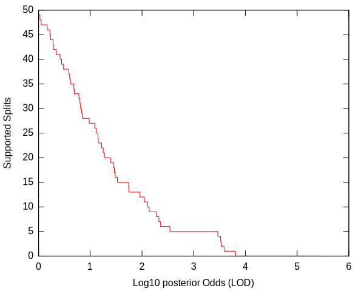
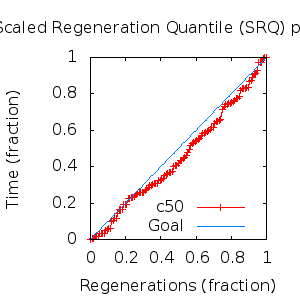
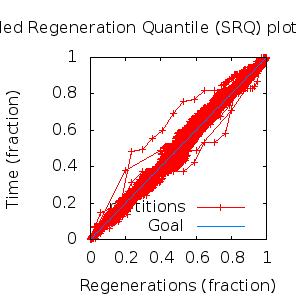

MCMC Post-hoc Analysis: 68 sequences
Data & Model
| Partition | Sequences | Lengths | Alphabet | Substitution Model | Indel Model | Scale Model |
|---|
| 1 |
E5_alpha1_alpha2_gammadelta_delta_epsilonzeta_beta_aa.fas |
43 - 165 |
Amino-Acids | S1 = lg08+f |
I1 = rs07 |
scale1 ~ gamma[0.5,2] |
Scalar variables
| Statistic | Median | 95% BCI | ACT | ESS | burnin | PSRF-CI80% | PSRF-RCF |
|---|
| prior |
-139.3 |
(-195.9, -86.56) |
28.04 |
9630 |
202
|
1 | 1.002
|
| prior_A1 |
-582.4 |
(-630.4, -540.4) |
16.19 |
16677 |
202
|
1 | 1.004
|
| likelihood |
-6366 |
(-6398, -6335) |
12.23 |
22072 |
232
|
1 | 1.002
|
| posterior |
-6506 |
(-6558, -6457) |
27.59 |
9785 |
154
|
0.9994 | 1.003
|
| Heat.beta |
1 |
| | | | | |
| Scale[1] |
20.38 |
(16.19, 25.28) |
1.204 |
224170 |
195
|
0.9998 | 0.9985
|
| f:pi[A] |
0.05228 |
(0.04151, 0.06372) |
7.936 |
34023 |
238
|
0.9996 | 1.005
|
| f:pi[R] |
0.04818 |
(0.03543, 0.06236) |
8.178 |
33016 |
390
|
1.001 | 1.01
|
| f:pi[N] |
0.02512 |
(0.01705, 0.03415) |
7.773 |
34737 |
598
|
0.9998 | 1.007
|
| f:pi[D] |
0.0499 |
(0.03405, 0.06765) |
8.893 |
30362 |
194
|
0.9999 | 0.9964
|
| f:pi[C] |
0.04218 |
(0.03188, 0.05302) |
8.451 |
31950 |
452
|
1 | 1.003
|
| f:pi[Q] |
0.04174 |
(0.03124, 0.05327) |
8.064 |
33480 |
362
|
1 | 0.9934
|
| f:pi[E] |
0.02196 |
(0.01298, 0.03191) |
8.285 |
32588 |
516
|
1 | 1.001
|
| f:pi[G] |
0.05743 |
(0.04107, 0.0754) |
8.967 |
30112 |
723
|
0.9999 | 0.9938
|
| f:pi[H] |
0.03466 |
(0.02537, 0.04485) |
7.94 |
34006 |
461
|
0.9998 | 1.004
|
| f:pi[I] |
0.0551 |
(0.04634, 0.0644) |
8.963 |
30125 |
352
|
1 | 1.004
|
| f:pi[L] |
0.1738 |
(0.1544, 0.1936) |
8.769 |
30791 |
212
|
1 | 0.9977
|
| f:pi[K] |
0.02847 |
(0.01883, 0.03895) |
8.482 |
31833 |
364
|
1 | 1
|
| f:pi[M] |
0.01889 |
(0.01396, 0.02402) |
8.483 |
31829 |
300
|
1 | 1
|
| f:pi[F] |
0.05931 |
(0.04829, 0.07049) |
8.286 |
32585 |
383
|
1 | 1
|
| f:pi[P] |
0.0356 |
(0.02293, 0.0499) |
8.839 |
30546 |
417
|
1 | 0.9941
|
| f:pi[S] |
0.05285 |
(0.04152, 0.06471) |
8.456 |
31930 |
320
|
1 | 0.9979
|
| f:pi[T] |
0.06656 |
(0.0542, 0.07923) |
8.002 |
33743 |
603
|
0.9998 | 1.001
|
| f:pi[W] |
0.01615 |
(0.009601, 0.02386) |
8.045 |
33563 |
586
|
0.9995 | 1.006
|
| f:pi[Y] |
0.03149 |
(0.02328, 0.04033) |
8.966 |
30115 |
471
|
0.9997 | 1.004
|
| f:pi[V] |
0.08335 |
(0.07136, 0.09593) |
8.818 |
30619 |
332
|
0.9999 | 0.9984
|
| rs07:mean_length |
5.895 |
(4.555, 7.509) |
4.085 |
66093 |
170
|
1 | 1.001
|
| rs07:log_rate |
-3.853 |
(-4.119, -3.579) |
2.741 |
98499 |
129
|
1 | 0.9995
|
| |A1| |
283 |
(256, 314) |
64.1 |
4212 |
737 |
0.9762 | 0.9966
|
| #indels1 |
68 |
(62, 75) |
15.12 |
17854 |
202 |
0.8889 | 1.002
|
| |indels1| |
376 |
(340, 420) |
5.512 |
48987 |
186 |
0.9808 | 0.9992
|
| #substs1 |
1187 |
(1159, 1210) |
52.7 |
5123 |
976 |
0.9722 | 0.9972
|
| Scale1*|T| |
23.24 |
(21.42, 25.17) |
2.788 |
96841 |
143
|
1 | 0.9999
|
| |A| |
283 |
(256, 314) |
64.1 |
4212 |
737 |
0.9762 | 0.9966
|
| #indels |
68 |
(62, 75) |
15.12 |
17854 |
202 |
0.8889 | 1.002
|
| |indels| |
376 |
(340, 420) |
5.512 |
48987 |
186 |
0.9808 | 0.9992
|
| #substs |
1187 |
(1159, 1210) |
52.7 |
5123 |
976 |
0.9722 | 0.9972
|
| |T| |
1.141 |
(0.9124, 1.393) |
1.011 |
266946 |
120
|
0.9999 | 0.9991
|
Phylogeny Distribution


Alignment Distribution
Partition 1
|
|
|
Diff |
|
Min. %identity |
# Sites |
Constant |
Informative |
| Initial |
FASTA |
HTML |
Diff |
|
0.735% |
165 |
1 (0.606%) |
162 (98.2%) |
| Best (WPD) |
FASTA |
HTML |
|
AU |
0.763% |
305 |
1 (0.328%) |
256 (83.9%) |
Mixing
Statistics: | scalar burnin | 976 | | scalar ESS | 4212 | | topological ESS | | | ASDSF | NA | | MSDSF | NA | | PSRF CI80% | 1.001 | | PSRF RCF | 1.01 |
|  |
Analysis
directory: /work/awillemsen/bali-phy/AlphaPVs_E5_aa_new
version: 3.3
| chain # | burnin | subsample | Iterations (after burnin) | command line | subdirectory |
|---|
| 1 |
10000 |
1 |
90000 |
bali-phy E5_alpha1_alpha2_gammadelta_delta_epsilonzeta_beta_aa.fas -s 42046 --smodel lg08 -i 100000 -n AlphaPVs_E5_ALL |
AlphaPVs_E5_ALL-1 |
| 2 |
10000 |
1 |
90000 |
bali-phy E5_alpha1_alpha2_gammadelta_delta_epsilonzeta_beta_aa.fas -s 73541 --smodel lg08 -i 100000 -n AlphaPVs_E5_ALL |
AlphaPVs_E5_ALL-2 |
| 3 |
10000 |
1 |
90000 |
bali-phy E5_alpha1_alpha2_gammadelta_delta_epsilonzeta_beta_aa.fas -s 98133 --smodel lg08 -i 100000 -n AlphaPVs_E5_ALL |
AlphaPVs_E5_ALL-3 |
| P(data|M) = -6400.049 +- 0.399
|
Complete sample: 300001
topologies |
95% Bayesian credible interval: 285001 topologies |
Model and priors
Tree (+priors)
| topology | ~ uniform on tree topologies |
| branch lengths | ~ iid[num_branches[T],gamma[0.5,div[2,num_branches[T]]]] |
Substitution model (+priors)
| S1 | = |
lg08+f
| f:pi | ~ | dirichlet_on[letters[@a],1]
|
|
Indel model (+priors)
| I1 | = |
rs07
| rs07:log_rate | ~ | laplace[-4,0.707]
|
| rs07:mean_length | ~ | exponential[10,1]
|
|
Scales (+priors)
{kind=link}
{kind=link}
{kind=link}
{kind=link}
{kind=link}
{kind=link}
{kind=link}
{kind=link}